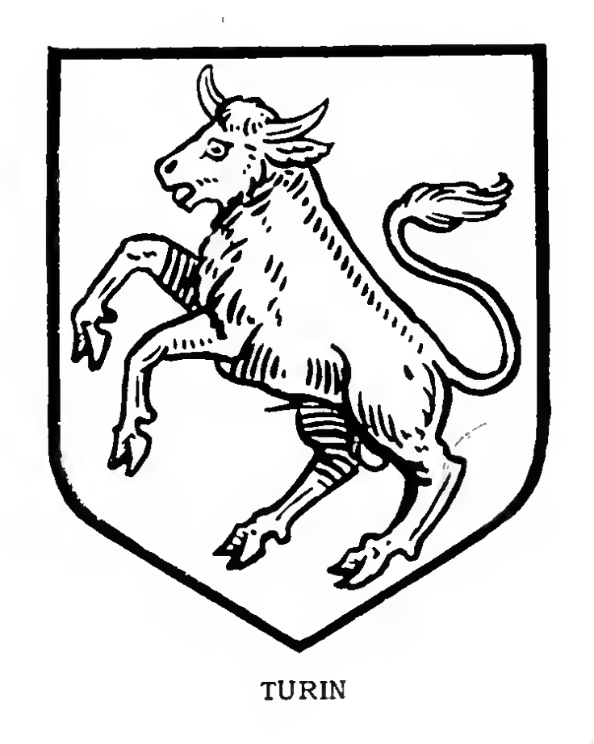

<p class="content"><span class="entry">TURIN </span>(Italy). Azure, a bull or.</p>
<p class="reference">Original Source <a href="https://archive.org/stream/bookofpublicarms00foxd/bookofpublicarms00foxd_djvu.txt">bookofpublicarms00foxd_djvu.txt</a> near line 25848.</p>

<figure class="public-arms-illustration">

<figcaption>TURIN (Italy).</figcaption>
</figure>
